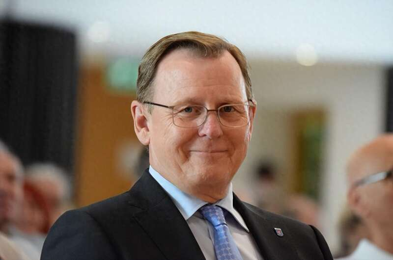
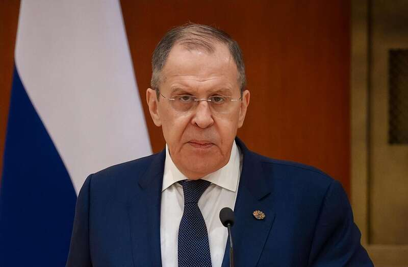
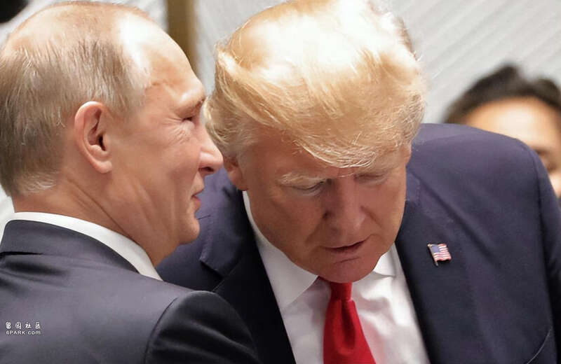

冷战结束后，世界秩序经历了多次重塑，但似乎始终未能找到一个稳定的平衡点。北约的东扩、俄罗斯的强势回归、中国的伟大复兴，这些都在不断改变着地缘政治的格局。
随着乌克兰陷入战争，又出现了新的挑战和机遇。
在这样的背景下，德国官员提出了新的建议，拉着俄罗斯一起组建新的防御联盟，他们的目标是什么？是为了真正的和平，还是为了在新的权力游戏中争取更有利的位置？这些提议背后，是否隐藏着更深层次的战略考量？

德国图林根州州长博多·拉梅洛夫
一石三鸟之计？
据俄罗斯卫星通讯社报道，德国图林根州州长博多·拉梅洛夫在接受采访时表示，欧洲需要一个包括俄罗斯在内的欧洲和平秩序，所有成员国都应签署互不侵犯条约，建立防御联盟，重点解决欧洲大陆的冲突。
所谓的“防御联盟”，实际上就是北约性质的联盟，西方一直宣称北约是“防御联盟”，即便这个联盟一直在挑起战争、参与战争、扩张。
按照拉梅洛夫的意思，建立新的联盟，可以解决两个问题，一个是结束当前的乌克兰战争，另一个则是，确保欧洲的长久和平。
如果考虑到美国总统候选人特朗普“联俄遏华”的战略，这一建议也可以视为迎合特朗普，以确保特朗普真的上台之后，能对欧洲手下留情。

俄罗斯外长拉夫罗夫
俄罗斯并不排斥与西方的合作
这种想法是否可行，需要从多个角度来分析：
首先，从俄罗斯的角度来看，莫斯科并不排斥与西方合作。事实上，俄罗斯一直希望被视为“欧洲大家庭”的一员。苏联解体之后，俄美之间也有过不少互动，也尝试让俄罗斯加入北约。此外，俄罗斯曾经是G8的成员，这也说明俄罗斯与西方的关系并非不可调和。
包括此次俄乌冲突爆发之前，俄罗斯的最大贸易伙伴也是欧盟。
俄罗斯外长拉夫罗夫最近的表态也印证了这一点，他表示，在与西方国家就经济合作、基础设施项目、安全问题以及在欧亚大陆建立新的安全架构进行对话等问题上，俄罗斯不会关闭大门。
那么，如果特朗普再次上台，欧洲被迫恢复与俄罗斯的合作，加上美国的拉拢，俄罗斯似乎真的有可能倒向西方。

普京和特朗普
俄罗斯被骗怕了
不过从实际出发的话，这种事情几乎不可能发生。
一方面是因为俄罗斯被骗怕了，俄罗斯曾一心向西，换来的却是北约的东扩和欧美的制裁，甚至接连爆发战争，俄罗斯很难再相信西方的承诺，尤其是在当前这场战争的背景下，俄方已经彻底失去了对西方的信心。
另一方面，俄罗斯也不愿意成为西方遏制中国工具，莫斯科珍视其与北京的战略伙伴关系。中俄关系已经发展到相当深入的程度，不是西方几个政策就能轻易瓦解的。
而且西方的“遏制”政策到底有没有用，相信俄罗斯比谁都清楚，几十个发达国家都没能把俄罗斯怎么样，用这样的方式对付中国，更不可能起到什么效果。